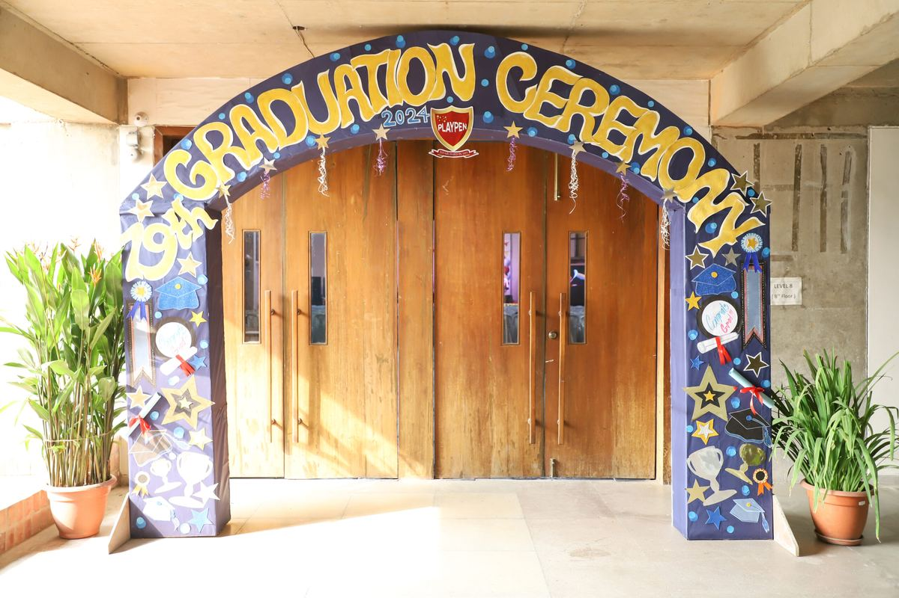
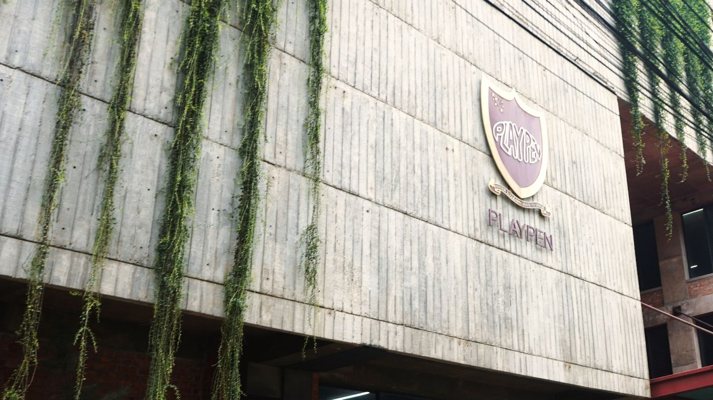

Begun as a kindergarten.
Playpen was founded in Dhaka by the educationist Mrs Zeba Khan. The school's own history describes it as starting with a kindergarten and growing class by class.
-
A kindergarten in Dhaka
The educationist Mrs Zeba Khan founds the school, which begins as a kindergarten.†
-
Primary classes
By 1998 the school has added primary classes. Secondary classes follow; the school's own history gives no year for them.
O Level first, then A Level.
Since 2013 a child who joins in Playgroup can stay at Playpen until the end of school. The Cambridge pathway explains the examination years.
-
The first O Level candidate
The school's first Ordinary Level candidate sits the examination and earns A grades in all seven subjects.
-
A Level classes begin
Chairman Mr A. Mannan Khan introduces A Level. The school now teaches from Playgroup to A Level.
-
The first A Level batch
The first full batch of students enrols for the two-year course. A Level teaching had begun in 2013.

And today: the hall doors dressed for Graduation, 2024. The ceremony is for the O and A Level leavers of the year.
Into a building of its own.
Principal Mrs Sorabon Tohura led the move. Chairman Mr A. Mannan Khan oversaw the construction, and the architect was Mr Ehsan Khan. Our campus walks through the building.
-
The school's own buses
The school begins to run its own bus service. Transport and safety says how a family applies for a place.
-
The move to Bashundhara
Under Principal Mrs Sorabon Tohura, the school moves into its own building of ten storeys in Bashundhara Residential Area. The architect is Mr Ehsan Khan.

And today: the crest on the street front of the building, 2024.